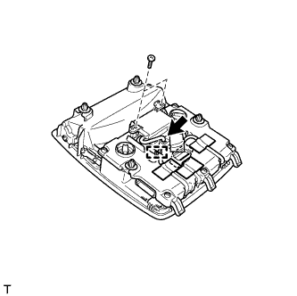
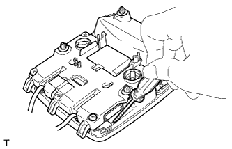
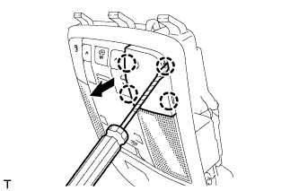
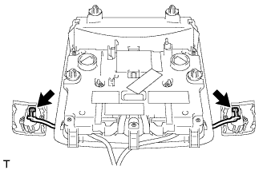
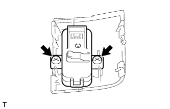

ДАТЧИК ПРОНИКНОВЕНИЯ > СНЯТИЕ |
| 1. СНИМИТЕ ЛАМПУ ИНДИВИДУАЛЬНОГО ОСВЕЩЕНИЯ |
 |
Освободите 4 фиксатора.
Отсоедините разъем и снимите лампу индивидуального освещения.
| 2. СНИМИТЕ ДАТЧИК РАДАРА ПРОТИВОУГОННОЙ СИСТЕМЫ |
Отсоедините разъем.
|  |
Удалите всю ленту и выверните 2 винта.
Освободите зажим и отсоедините среднюю часть датчика радара противоугонной системы.
|  |
С помощью отвертки с тонким лезвием слегка нажмите на держатель вниз.
|  |
Вставьте отвертку с тонким лезвием в вырез держателя и снимите держатель с лампы индивидуального освещения.
|  |
Отсоедините 2 разъема.
|  |
Выверните 2 винта и снимите датчик радара противоугонной системы.